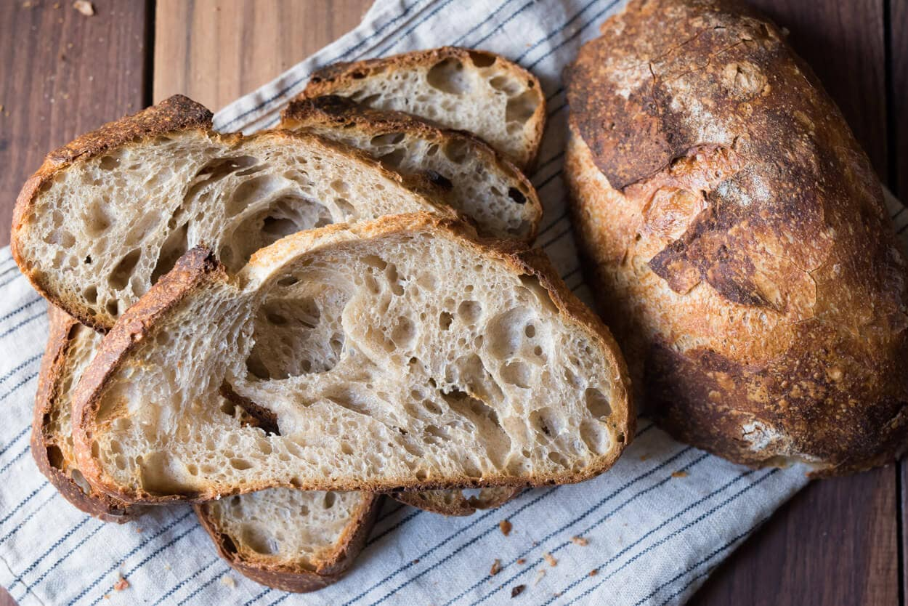

Dough Bros | The Original Loaf
A timeless favorite, perfect for any meal. This plain sourdough bread offers a classic taste and texture, versatile for any topping or occasion. Enjoy its tangy flavor and hearty goodness, whether toasted with butter or paired with your favorite spreads.
-
Preparation time
- Total: Approximately 2.1 days
- Preparation: 2 Days
- Cooking: 1 hours
-
Ingredients
- 400 Grams of Whole Grain Flour
- 100 Grams of White Whole Wheat Flour
- 365 Grams of Warm Water
- 9 Grams of Fine Seasalt
-
Instructions
- Create the Starter: Firstly, go ahead and mix 25 grams of Whole Grain Flower with 25 grams of Warm Water. Once combined, the starter will begin to ferment, and cause the bread to rise.
- Maintaining the Starter: To maintain your starter, keep it at room temperature and feed it daily, to feed it, you must half your starter, Split your starter in half, and either throw it out or make another dough with it. Next, you add the same amount of water and flour, as there are grams in your newly halved starter. Continue this process for 6 days.
- Creating the Dough: Whisk the starter and all of your water together in a large bowl, as you mix, begin to add your flour and your salt. Let rest for 30 minutes, and work the dough into a fairly smooth ball.
- Bulk Rise: Put the dough into a bowl and cover it with a damp towel. Let the bowl sit overnight at room temperature. (8-10 hours) You will know the dough is ready, when it has doubled in size, you do not need to be precise about it, you should be able to tell.
- Shape the Dough: After 8-10 hours coax the dough into your preferred shape. We recommend a type of oval/sphere.
- Rise your Dough: Put your dough in a covered bowl, and let rest for 30 minutes to 1 hour. The dough is ready when it is risen slightly, if your bread hasn't risen after an hour, we recommend you recheck the steps.
- Preheat the Oven: Preheat your oven to 450°F. Before putting the dough in the oven, you may score/put a pattern on the sourdough if you prefer.
- Bake your Dough: Bake the dough in a Dutch oven, on the center rack of your oven for 20 minutes. (Cover the pot) After 20 minutes is up, remove the cover, and continue to bake for 25 minutes. Then, carefully remove the loaf from the pot.
- Finish Baking: When done, take the loaf out of the oven, and let cool for 1 hour.
- Enjoy your Loaf: Plate the loaf, and cut into desired sizes. We recommend serving with Balsamic, Vinegar, Butter, or Jam.
Nutrition
The table below shows nutritional values per serving without the additional fillings.
| Calories |
84kcal |
|---|---|
| Carbs |
16g |
| Protein |
3g |
| Fat |
1g |